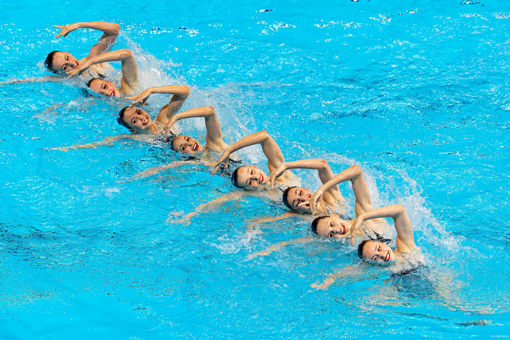

Финал первенства России по баскетболу
Город: Москва
Даты проведения: 11 июля - 19 июля

Чемпионат России по синхронному плаванию
Город: Екатеринбург
Даты проведения: 22 апреля - 27 апреля

Всероссийские соревнования по спортивному программированию
Город: Оренбург
Даты проведения: 26 июня - 30 июня

Республиканский турнир по теннису "Лето в Зубово"
Город: Уфа, Башкортостан
Даты проведения: 24 июня - 28 июня